150
Page 54


Page 55


9
നേരമായി
151
Page 56

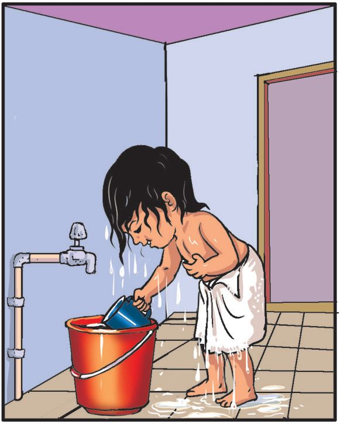

ജനുവരി
മിയയുടെ ഡയറി എന്റെ ഒരു ദിവസം
ബുധൻ
രാവിലെ അമ്മ വിളിച്ചുണർത്തി.
എഴുന്നേറ്റ് പല്ലുതേച്ചു.
കുളിക്കാൻ കൂടുതൽ സമയമെടുത്തു.
152
Page 57

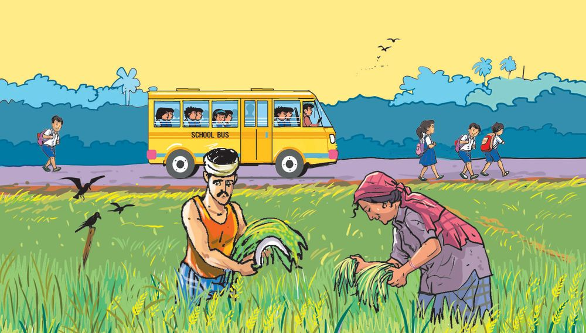
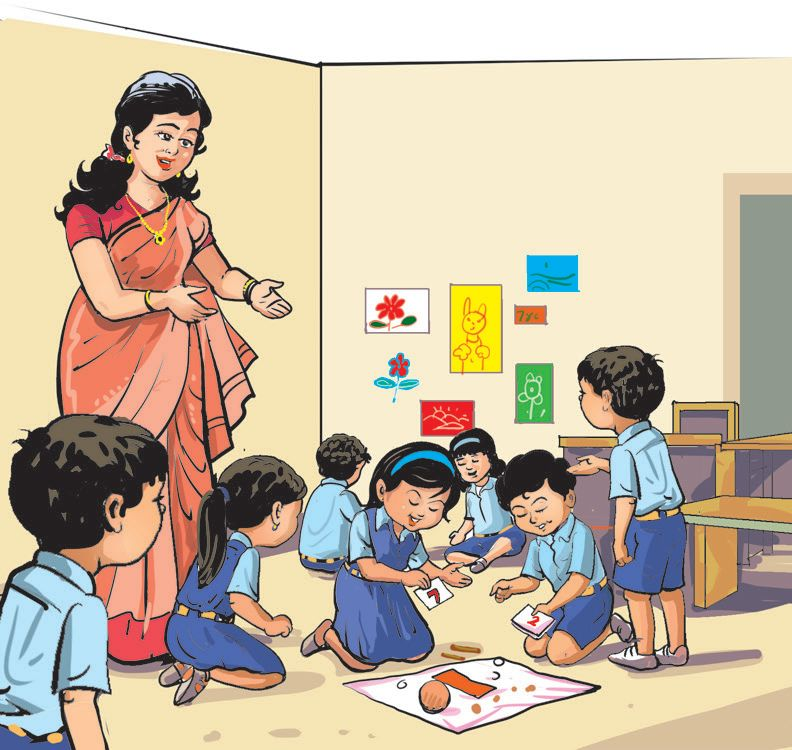

അച്ഛൻ ദോോശയും ചമ്മന്തിയും തന്നു.
സ്കൂൾ വാനിൽ പോോയതിനാൽ വേഗം സ്കൂളിലെത്തി.
ഉച്ചവരെ രേണുക ടീച്ചറോോടൊൊപ്പം.
153
Page 58

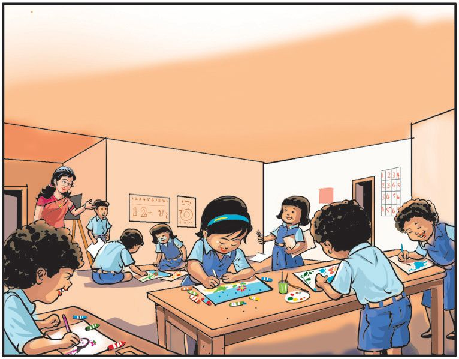
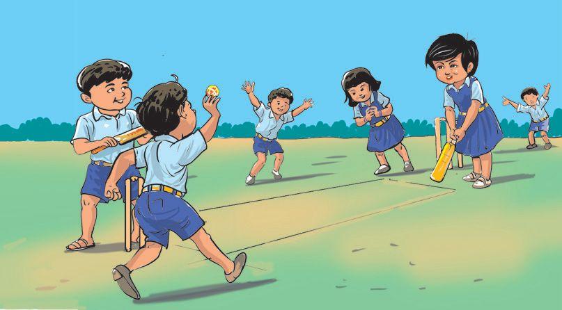

ഉച്ചയ്ക്ക് സ്കൂളിൽ നിന്ന് ഊണിനൊൊപ്പം എനിക്ക് ഇഷ്ടമുള്ള കൂട്ടുകറി കിട്ടി. നല്ല രുചിയുണ്ടായിരുന്നു. ഉച്ചയ്ക്കുശേഷം ഗണിത പുസ്തകത്തിൽ ചിത്രം വരച്ചു.
വൈകുന്നേരം കൂട്ടുകാരോോടൊൊപ്പം ക്രിക്കറ്റ് കളിച്ചു. 154
Page 59

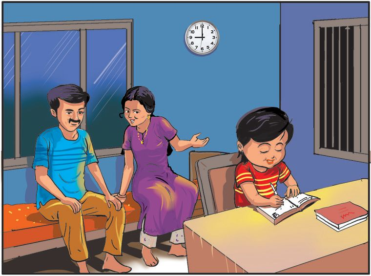

രാത്രി ചപ്പാത്തിയാണ് കഴിച്ചത്.
“മോോളേ, 9 മണിയായി. ഇനി ഉറങ്ങാം.”
അമ്മ പറഞ്ഞു.
155
Page 60

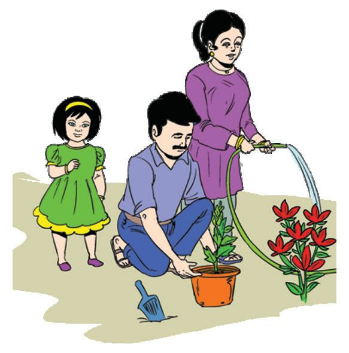
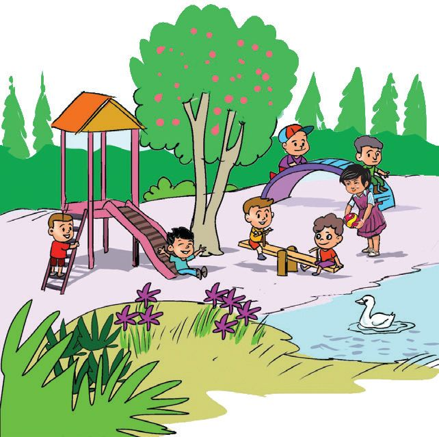
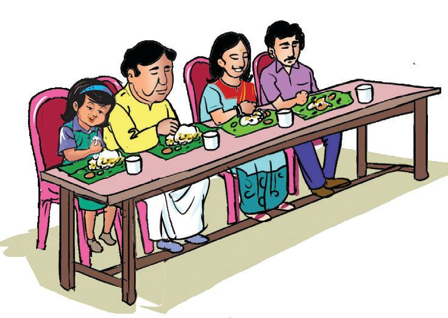
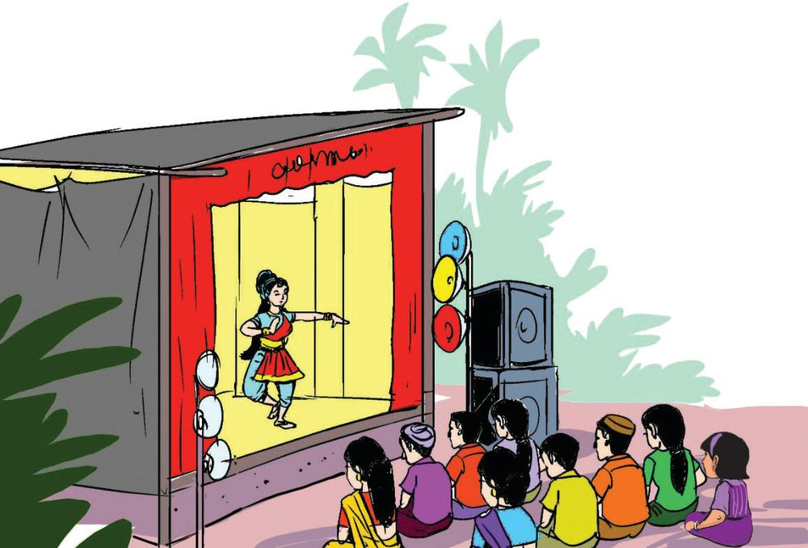

ചിത്രങ്ങൾ നോോക്കി ഡയറി എഴുതാം. മിയ എന്തൊൊക്കെ കണ്ടു? എവിടെയൊൊക്കെ പോോയി? എന്തെല്ലാം ചെയ്തു?
156
Page 61


എന്റെ ഡയറി നിങ്ങൾ ഞായറാഴ്ച എവിടെയൊൊക്കെ പോോയി? എന്തൊൊക്കെ ചെയ്തു? അവയെല്ലാം ചേർത്ത് ഡയറി എഴുതൂ. ചിത്രങ്ങളുംം വരയ്ക്കൂ.
ഇന്ന് ഞായറാഴ്ചയല്ലേ ഡയറിയിൽ എന്തൊൊക്കെ എഴുതണം?
രാവിലെ, ഉച്ചയ്ക്ക്, വൈകുന്നേരം, രാത്രി എന്നെല്ലാം ചേർക്കണം
157
Page 62


ആഴ്ചപ്പൂരം ആഴ്ചകളേഴുംം കൂടി കൊൊടകര പൂരം കാണാൻ ചെന്നെത്തി ഞായർ ഗമയിൽ നടന്നു മുന്നിൽ പിറകെക്കൂടി മറ്റുള്ളോോർ തിങ്കൾ വാങ്ങി ചാന്തുംപൊൊട്ടുംം ചൊൊവ്വ കറക്കി കളിപ്പാട്ടം ബുധനും വ്യാഴവും ചുറ്റിനടന്നു കടല കൊൊറിച്ചു രസിക്കുന്നു വെള്ളി തിരഞ്ഞു പലഹാരം ശനിക്കുവേണ്ടത് മണിമാല ചുറ്റിയടിച്ചു നടക്കുന്നേരം ചടപട ചടപട വെടിപൊൊട്ടി പേടിച്ചോോടി ആഴ്ചകളേഴുംം ചുവരിൽ കയറിയിരിപ്പായി. -പി.ടി. മണികണ്ഠൻ പന്തലൂർ
158
Page 63

കലണ്ടർ നോോക്കൂ. ദിവസങ്ങൾ പറയൂ. എഴുതൂ. January ഞായർ
തിങ്കൾ
SUNDAY
ചൊൊവ്വ
MONDAY
ബുധൻ
TUESDAY
WEDNESDAY
1 17
5
21
12
6
22
13 28
19
29
6
26
13
7
23
14
20
റിപ്പബ്ലിക്ദിനം
2025
ജനുവരി
1
7
FRIDAY
SATURDAY
2
3
4
മന്നം ജയന്തി
18
9
2
8
25
10
26
20
11
രണ്ടാം ശനി
4
10
27
18
24
30 16
19
3
9
ശനി
17
23
29 15
വെള്ളി
16
22
28 14
24
15
21
27
8
വ്യാാഴം
THURSDAY
5
25 11
12
31 17
18
2025 ജനുവരി മാസത്തിൽ എത്ര അവധി ദിവസങ്ങളുണ്ട്? പുതുവർഷം തുടങ്ങുന്നത് ഏതു തീയതി, ഏതു ദിവസം?
159
Page 64


ശുചിത്വവവിദ്യാാലയം ഞായറാഴ്ച വിദ്യാാലയത്തിൽ രക്ഷിതാക്കളുടെ യോോഗം നടന്നു. ശുചിത്വവസേനയുടെ ഉദ്ഘാടനം നടന്നത് തിങ്കളാഴ്ചയാണ്. വാർഡ് മെമ്പർ വന്നിരുന്നു. ചൊൊവ്വാഴ്ച ഓലക്കുട്ടകൾ ഉണ്ടാക്കി. കുഴിയുണ്ടാക്കിയത് ബുധനാഴ്ച ആണ്. വ്യാാഴാഴ്ച പോോസ്റ്റർ പ്രചരണം നടത്തി. വെള്ളിയാഴ്ച രക്ഷിതാക്കൾ വന്ന് വിദ്യാാലയവും പരിസരവും വൃത്തിയാക്കി. ശനിയാഴ്ച പഞ്ചായത്ത് പ്രസിഡന്റ് വന്നു ശുചിത്വവ വിദ്യാാലയമായി പ്രഖ്യാപിച്ചു.
എന്റെ അനുഭവം (ഒരാഴ്ച) നിങ്ങളുടെ ഓരോോ ദിവസത്തെയും ഒരു ഇഷ്ടപ്പെട്ട കാര്യംം കളത്തിൽ എഴുതൂ. ഞായർ തിങ്കൾ ചൊൊവ്വ ബുധൻ വ്യാാഴം വെള്ളി ശനി 160
Page 65

കലണ്ടർ നോോക്കി പൂർത്തിയാക്കൂ. 1
ജനുവരി 2
പുതുവർഷം തുടങ്ങുന്നു
ഫെബ്രുവരി
3 4
വേനൽ അവധി
5 സ്കൂൾ തുറക്കുന്നു
6 7
സ്വാതന്ത്ര്യയദിനം
8 9 10
ശിശുദിനം 11 ക്രിസ്തുമസ് 12
ഡിസംബർ
സ്കൂൾ വേനലവധിക്കാലം ഏതെല്ലാം മാസങ്ങളിലാണ്?
നിങ്ങളുടെ പിറന്നാൾ ഏതു മാസത്തിലാണ്? ആ മാസത്തിന് നീലനിറം കൊൊടുക്കൂ. വർഷത്തിലെ അവസാനമാസം ഏതാണ്?
161
Page 66


ഏതേതു മാസം ? പുതുവർഷാരംഭം
റിപ്പബ്ലിക് ദിനം
ശിശുദിനം
ഗാന്ധിജയന്തി
സ്വാതന്ത്ര്യയദിനം
അധ്യാാപകദിനം
162
സെപ്റ്റംബർ
Page 67
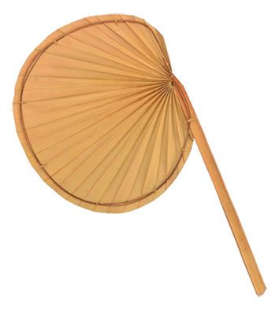
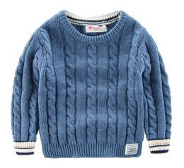
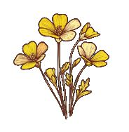

കാലങ്ങൾ
വേനൽക്കാലം
വസന്തകാലം
മഴക്കാലം
ശീതകാലം
ഓരോോ കാലത്തിനും അനുയോോജ്യയമായ ചിത്രങ്ങൾ യോോജിപ്പിച്ച് വരയ്ക്കൂ. വസന്തകാലം
വേനൽക്കാലം
മഴക്കാലം
ശീതകാലം 163